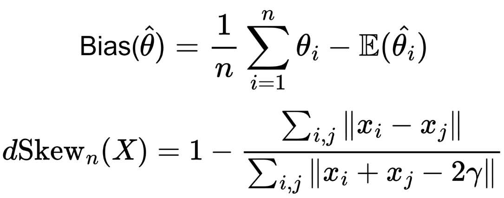

|
Guanglei (Ian) Zhu
I am a Master of Computer Vision student at Carnegie Mellon University. My passion lies in
addressing real-world challenges through Machine Learning and Computer Vision. I'm actively seeking
summer intern roles for 2024!
Before this, I had the privilege of interning at the Vector Institute under the mentorship of Prof.
Animesh Garg. I finished my undergraduate study in Computer Science at University of Toronto.
Email /
CV /
LinkedIn
|
|
|
|
Don't Look Twice: Faster Video Transformers with Run-Length Tokenization
Rohan Choudhury,
Guanglei Zhu,
Sihan Liu,
Koichiro Niinuma,
Kris M. Kitani,
Laszlo Attila Jeni
The Thirty-eighth Annual Conference on Neural Information Processing Systems (Neurips), 2024, Spotlight
project page
|
|

|
Don't Look Twice: Faster Video Transformers with Run-Length Tokenization
Wenda Xu,
Guanglei Zhu,
Xuandong Zhao,
Liangming Pan,
Lei Li,
William Yang Wang
The 62nd Annual Meeting of the Association for Computational Linguistics (ACL), 2024, Oral
project page
/
arXiv
/
code
|
|
|
HandyPriors: Physically Consistent Perception of Hand-Object Interactions
with Differentiable Priors
Shutong
Zhang*,
Yi-Ling Qiao*,
Guanglei Zhu*,
Eric Heiden,
Dylan Turpin,
Jingzhou Liu,
Ming Lin,
Miles Macklin,
Animesh Garg
The International Conference on Robotics and Automation (ICRA), 2024
project page
/
arXiv
|

|
Fast-Grasp'D: Dexterous Multi-finger Grasp Generation Through
Differentiable Simulation
Dylan Turpin,
Tao Zhong,
Shutong Zhang,
Guanglei Zhu,
Eric Heiden,
Miles Macklin,
Stavros Tsogkas,
Sven Dickinson,
Animesh Garg
The International Conference on Robotics and Automation (ICRA), 2023
project page
/
video
/
arXiv
/
poster
|

|
TikTok, San Jose, CA
MLE Intern, May 2024 - Aug. 2024
Working on Multimodal Foundation Models for Recommendation Safety
|

|
Carnegie Mellon University, Pittsburgh, PA
Master of Science in Computer Vision
Aug. 2023 - Dec. 2024
GPA: 3.95/4.00
Courses: Multimodal Foundation Models, Large Language Models, Visual Learning and Recognition
|

|
University of Toronto, Toronto, ON
Honours Bachelor of Science in Computer Science
Sep. 2019 - May 2023
GPA: 3.87/4.00
Awards: In-Course Scholarship ($1500), Dean's List Scholar
|
|